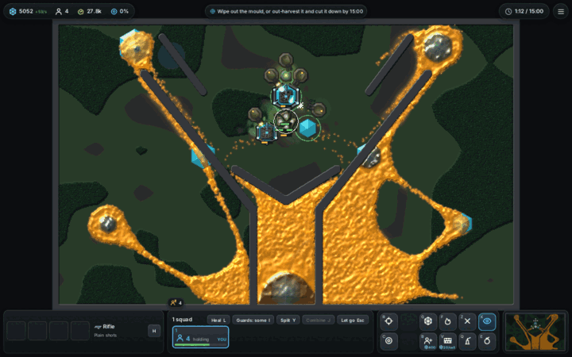
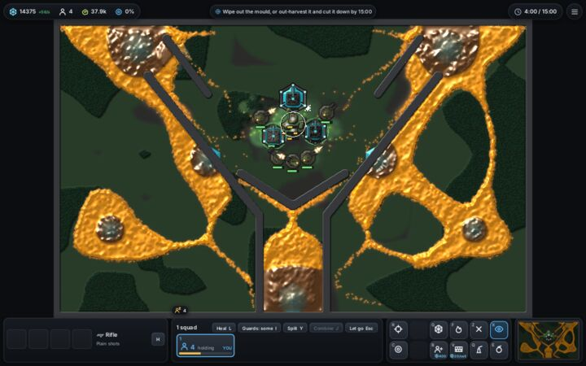
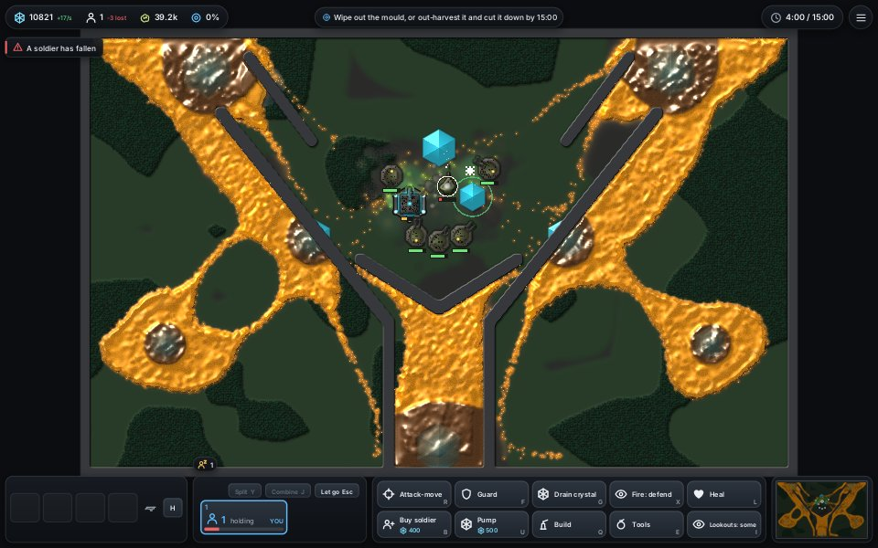

<title>Slime raids</title>
<meta name="claude:viewport-fit-sides" content="cover">
<link rel="stylesheet" href="https://fonts.googleapis.com/css2?family=Space+Grotesk:wght@500;700&family=Inter:wght@400;600&display=swap">
<style>
/* One column of films, each with its counts beside it; the look of the game's own HUD (dark ground, amber slime). */
:root {
  --bg: #f5f3ee; --panel: #ffffff; --fg: #1d1f22; --muted: #5d6168; --line: #dcd8cf; --slime: #b86a00; --bad: #b3261e;
  --display: "Space Grotesk", "Segoe UI", system-ui, sans-serif; --body: "Inter", "Segoe UI", system-ui, sans-serif;
}
@media (prefers-color-scheme: dark) { :root:not([data-theme="light"]) { --bg: #14171b; --panel: #1c2026; --fg: #e8e6e1; --muted: #a2a7ae; --line: #2e333a; --slime: #f0a52c; --bad: #ff8a80; color-scheme: dark } }
:root[data-theme="dark"] { --bg: #14171b; --panel: #1c2026; --fg: #e8e6e1; --muted: #a2a7ae; --line: #2e333a; --slime: #f0a52c; --bad: #ff8a80; color-scheme: dark }
body { background: var(--bg); color: var(--fg); font-family: var(--body); font-size: 15px; line-height: 1.55; padding-left: max(16px, env(safe-area-inset-left, 0px)); padding-right: max(16px, env(safe-area-inset-right, 0px)); padding-block: 28px 48px }
main { max-width: 980px; margin: 0 auto; display: grid; gap: 28px }
h1, h2 { font-family: var(--display); text-wrap: balance; margin: 0 }
h1 { font-size: 30px } h2 { font-size: 20px }
p { margin: 0; max-width: 68ch }
.lede { display: grid; gap: 10px }
.muted { color: var(--muted) }
section { display: grid; grid-template-columns: minmax(0, 3fr) minmax(0, 2fr); gap: 20px; align-items: start; background: var(--panel); border: 1px solid var(--line); border-radius: 8px; padding: 18px }
section img { width: 100%; border-radius: 4px; display: block }
.side { display: grid; gap: 10px; min-width: 0 }
table { border-collapse: collapse; font-variant-numeric: tabular-nums; width: 100% }
td, th { text-align: left; padding: 4px 8px 4px 0; border-bottom: 1px solid var(--line); font-size: 14px }
th { color: var(--muted); font-weight: 600 }
.tag { font-size: 12px; letter-spacing: .04em; text-transform: uppercase; color: var(--slime); font-weight: 600 }
.pair { display: grid; grid-template-columns: 1fr 1fr; gap: 12px }
.pair figure { margin: 0; display: grid; gap: 6px } figcaption { font-size: 13px; color: var(--muted) }
code { font-size: 13px; overflow-wrap: anywhere }
@media (max-width: 720px) { section, .pair { grid-template-columns: 1fr } }
</style>
<main>
  <div class="lede">
    <h1>Slime raids</h1>
    <p>Your turtle stalled because the slime only attacked what came within gun range plus 5 cells, and a lure pulled from just 6 cells. Now the slime spends the food it eats on <b>raids</b>. When it has eaten 400 food (at least 40 s apart, the first after 1:00, and at most 2:30 apart), it sends 15% of its mass at your best pump. If there's no pump it picks another building, and with no buildings it goes for your soldiers. A lure that is on within 40 cells of that target takes the raid instead. Rendering turrets make the kill box pay, and the last stand is a menu option you can try.</p>
    <p class="muted">The Fork, seed 1, squad mode, the squad idle by its landing. Three pumps and five turrets stand from the start. Recorded in the game window on software graphics. Each film runs one game second per frame.</p>
  </div>

  <section>
    
    <div class="side">
      <span class="tag">Raid on a pump</span>
      <h2>1:17, the first raid hits the top pump</h2>
      <p>It takes the walkers nearest the pump, 80 cells around it holding 8,084 walkers, and sends 6 in 10 of them. The upper arms stream across to the pump while the home body stays put. The HUD reads "The mould is raiding your pump".</p>
      <table><tr><th>Turtle to 4:00</th><th>Raids off</th><th>Raids on</th></tr>
      <tr><td>Raids</td><td>0</td><td>4</td></tr>
      <tr><td>Slime killed</td><td>7,850</td><td>10,867</td></tr>
      <tr><td>Pumps lost</td><td>0 of 3</td><td>2 of 3</td></tr>
      <tr><td>Soldiers lost</td><td>0</td><td>3</td></tr>
      <tr><td>Harvested</td><td>5,834</td><td>3,554</td></tr>
      <tr><td>Slime walkers</td><td>37,872</td><td>39,201</td></tr></table>
    </div>
  </section>

  <section>
    
    <div class="side">
      <span class="tag">Lure kill box, rendering turrets</span>
      <h2>A lure in front of the pumps takes the raid</h2>
      <p>The lure stands north of the top pump with three rendering turrets round it. At 1:17 the raid meant for the pump turns for the lure ("A raid on your pump turns for the lure"), right into the guns. This film is from the first version, before raids walked round walls.</p>
      <p>Rendering is a turret upgrade. Select a turret and press Render (600 food). After that, every walker any shot kills within its range pays 0.25 food. In this film the five rendering turrets paid 608 food by 1:40, against 2,155 from the pumps.</p>
    </div>
  </section>

  <section>
    
    <div class="side">
      <span class="tag">Last stand, off by default</span>
      <h2>A losing slime rushes you with everything</h2>
      <p>The last stand comes once, when the slime falls under a share of its peak. Then every walker it has runs at your thickest knot of soldiers. It is off by default because you weren't sure about it. To film it here, the trigger was set at 80% of the peak instead of the default 25%, so it fired at 1:28.</p>
      <p><b>Raiders now walk round walls.</b> In the first version they steered straight and piled up against the Fork's walls. Now, when the slime decides on a raid, the game works out the walking distance to the target in the background and the raid sets off one second later along it. In this film the arms go round their tips and over the top to the squad, and the stem's body comes up its corridor into the turrets at its mouth. Three of the four soldiers were dead by 2:30.</p>
      <p class="muted">On the biggest planet the path takes 6 ms on a background thread, and the frame pays 0.22 ms.</p>
    </div>
  </section>

  <div class="pair">
    <figure><figcaption>Raids off, 4:00. All three pumps stand, and the slime never came.</figcaption></figure>
    <figure><figcaption>Raids on, 4:00. Two pumps are worn down, and the turrets killed 38% more.</figcaption></figure>
  </div>

  <p class="muted">Keys: <code>set=raid_food=0 set=raid_every=0</code> turns raids off, and <code>set=last_stand=1</code> turns the last stand on. Raw output and sources are in Reports/raids-2026-11-15/. CPU and GPU agree exactly on a raid in the squad twin test.</p>
</main>
